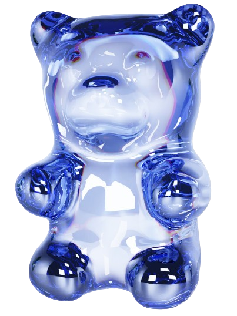

Encontre
quem cria com você
Encontre músicos, artistas e produtores que combinam com seu som, apresente seu trabalho e transforme uma conexão em uma nova parceria musical.

Encontre os músicos que você procura
Pesquise por instrumento, gênero, cidade e disponibilidade. Encontre pessoas que tenham o perfil certo para a banda, produção ou projeto que você quer colocar em prática.
Menos tempo procurando. Mais tempo criando.
O Backstage reúne descoberta, perfil e colaboração em um só lugar para facilitar o encontro entre pessoas que querem fazer música juntas.
Encontre músicos
Pesquise por instrumentos, gêneros, cidade e disponibilidade para encontrar pessoas que podem fazer parte do seu próximo projeto.
Mostre o que você faz
Crie um perfil musical com suas habilidades, experiências, estilos, instrumentos e referências para que outras pessoas conheçam seu trabalho.
Encontre oportunidades
Compartilhe ideias, conheça novos artistas e transforme contatos em parcerias, bandas, produções e projetos musicais.
A próxima parceria pode começar aqui.
Você pode chegar ao Backstage procurando um músico, apresentando uma ideia ou simplesmente querendo conhecer novas pessoas da cena. A plataforma ajuda a transformar essa intenção em uma oportunidade de colaboração.
Defina o que você procura
Encontre pessoas por instrumento, gênero, cidade e disponibilidade.
Apresente seu trabalho
Mostre suas habilidades, experiências, referências e o tipo de projeto que deseja construir.
Comece uma colaboração
Uma conexão pode evoluir para uma conversa, um ensaio, uma faixa ou um novo projeto.
Toda música começa com uma ideia.
Talvez seja uma composição, uma gravação, uma banda que ainda não existe ou apenas vontade de fazer algo novo. O Backstage aproxima as pessoas que podem transformar essa ideia em música.